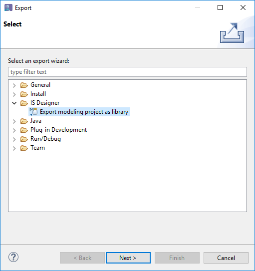
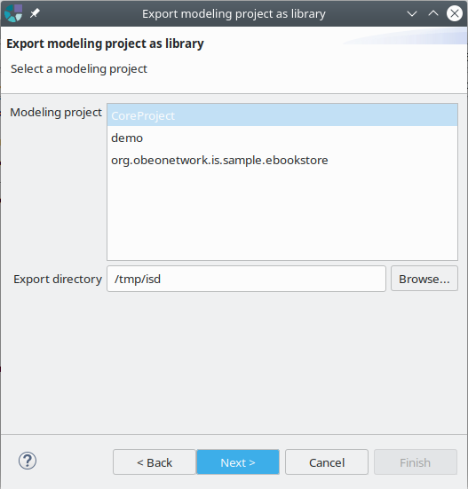
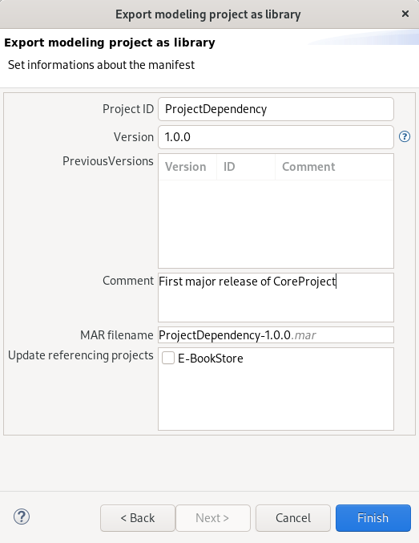
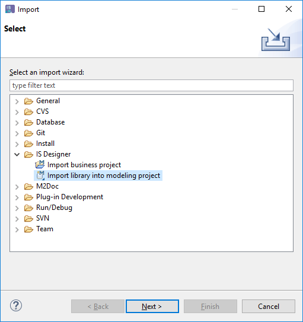
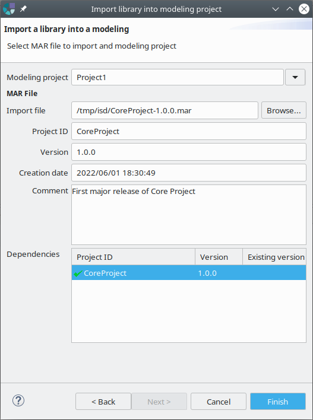
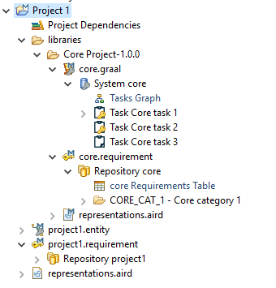
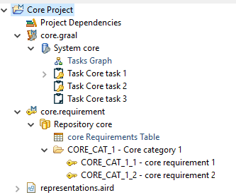
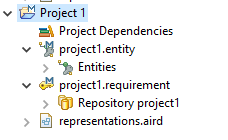
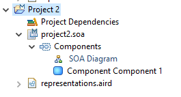
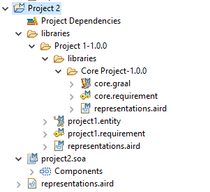

Copyright © 2008, 2026 Obeo - All rights reserved. This program and the accompanying materials are made available under the terms of the Eclipse Public License v2.0
Cet outillage permet d’exporter un projet de modélisation en tant que fichier de bibliothèque et de l’importer dans d’autres projets de modélisation.
Lorsqu’une bibliothèque est exportée, l’utilisateur choisit un numéro de version. Ce numéro de version est vérifié lors de l’importation de la bibliothèque dans un autre projet de modélisation. Les références aux éléments contenus dans la bibliothèque sont mises à jour automatiquement.
Ceci est utile pour réutiliser les bibliothèques entre différents projets, en gardant la trace des versions.
Les fichiers de la bibliothèque portent l’extension
.mar (signifiant Modeling ARchive en anglais).
Pour exporter un projet de modélisation en tant que bibliothèque, utiliser le menu File > Export... et choisir Export modeling project as library dans la catégorie IS Designer.

La première page de l’assistant permet de définir les informations suivantes :

La deuxième page permet de définir les informations suivantes :
M.m.p.qualifier où M, m et p sont des nombres entiers.
.mar). Cette valeur est recalculée lorsque l’ID du projet ou la version est modifiée, mais elle peut être remplacée si nécessaire (l’extension
.mar est automatiquement ajoutée à la fin du nom en grisé et en italique s’il n’y a pas d’extension précisée).

Lorsque l’assistant est terminé, un fichier MAR est généré à l’emplacement spécifié. Ce fichier peut ensuite être importé dans un autre projet de modélisation.
Pour importer un fichier de bibliothèque dans un projet de modélisation, utiliser le menu File > Import... et choisir Import library into modeling project dans la catégorie IS Designer.

L’assistant permet de définir :

Une fois que le fichier MAR a été sélectionné, les informations suivantes sont extraites du fichier et affichées :
Les dépendances sont affichées avec une coche verte ou rouge indiquant si la dépendance est valide ou non par rapport au projet cible.
Si toutes les dépendances sont valides, l’utilisateur peut terminer l’assistant. Le fichier est alors importé dans un dossier
libraries du projet cible.
Un dossier portant le nom et l’ID du projet importé est créé. Toutes les données sémantiques et graphiques sont copiées dans ce dossier.

Lors de l’importation d’un fichier MAR, le tableau des dépendances indique :
L’exemple suivant illustre la gestion des dépendances entre trois projets.


Un dossier
libraries a été créé et un dossier pour
Core project V1.0.0 a été créé également.


Un dossier
libraries a été créé et un dossier pour
Project 1 V1.0.0 a également été créé.
À l’intérieur du dossier
Projet 1-1.0.0 se trouve un dossier
libraries pour le projet
Core project précédemment importé.